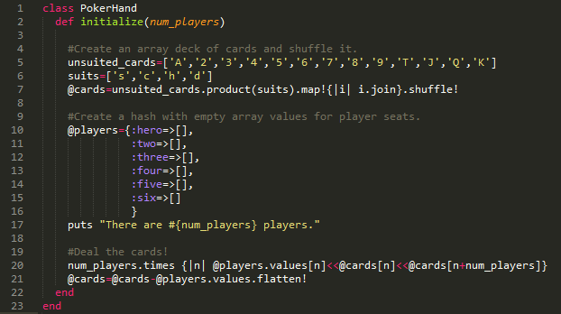
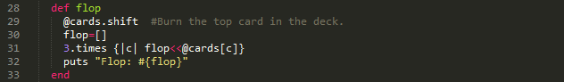
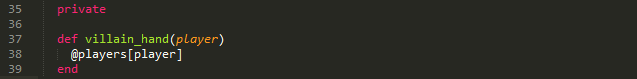

Dealing a Poker Hand in Ruby
July 23.2014
In this piece, I'm going to run through a short Ruby program I wrote to deal a hand of poker. I will discuss classes and instance variables, among other concepts. Let's take it step by step.
First, we must define a new class PokerHandas a blueprint to contain our methods and characterisics pertaining to a hand of poker. The first method in a new class is always going to be #initialize. When you create a new instance of the class PokerHand (i.e. an individual hand), you call #newon the class, which automatically looks for and executes #initializewithin the class definition. Let's do that now.
hand1=PokerHand.new(5)
=> There are 5 players.
We put a 5as the argument when creating the new class, which is interpreted by #initializeas the number of players in our game. Behind the scenes, #initializealso created a deck of cards, shuffled them, and dealt two to each player! I know, you want to see what you were dealt, right? Let's write another method to access the array value of the :herohash key.
hand1.hero_hand
=> Your hand is ["6c", "6s"]
Not bad, pocket 6's! See the '@' attached to our @playershash variable? That makes it an instance variable that our program can access across methods in our new PokerHand class, so long as it pertains to the same instance (i.e. hand1). Let's skip the betting for now and see a flop!

hand1.flop
=> Flop: ["Ac", "3s", "Jc"]
Probably not the flop we wanted to see, but our program is working! Let's write one more method to see our opponent's hands.

hand1.villain_hand(:two)
=> private method 'villain_hand' called for #(PokerHand:0x2c92248) (NoMethodError)
Not so fast! I told Ruby that #villain_handis private. This means that only our program can access this method and see player two's hand (or any of our opponent's hands, for that matter). We might have our program call this private method later on when we extend it to find out who wins, but that's for another day.